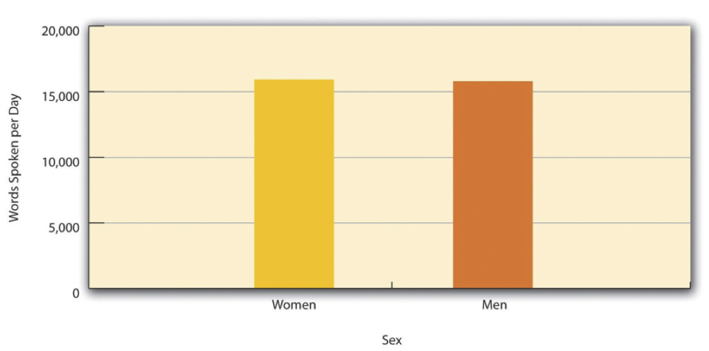
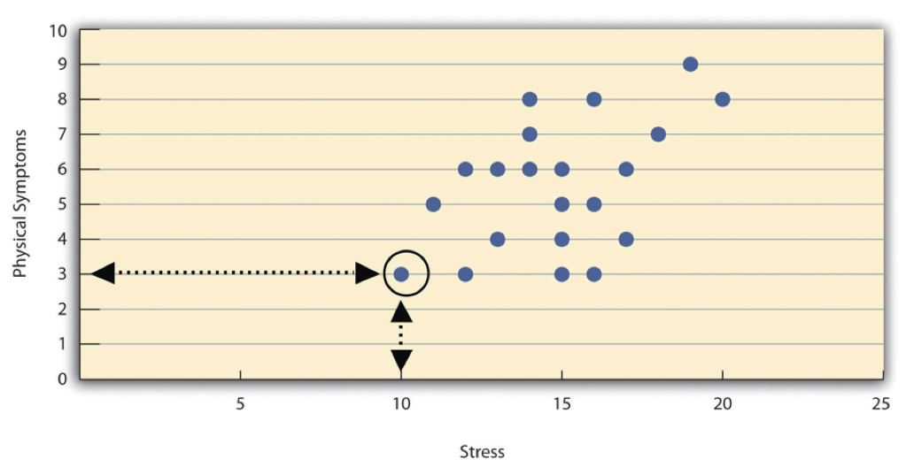
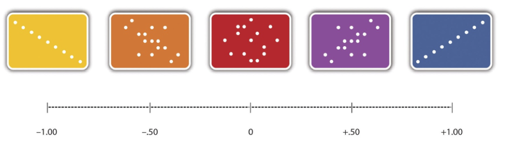
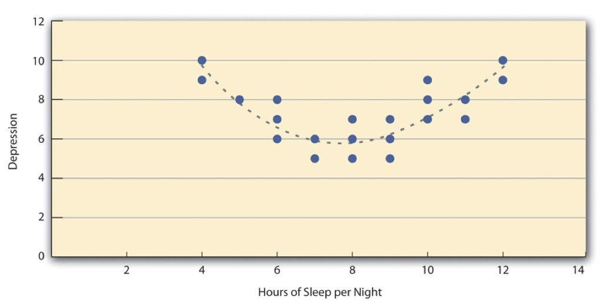
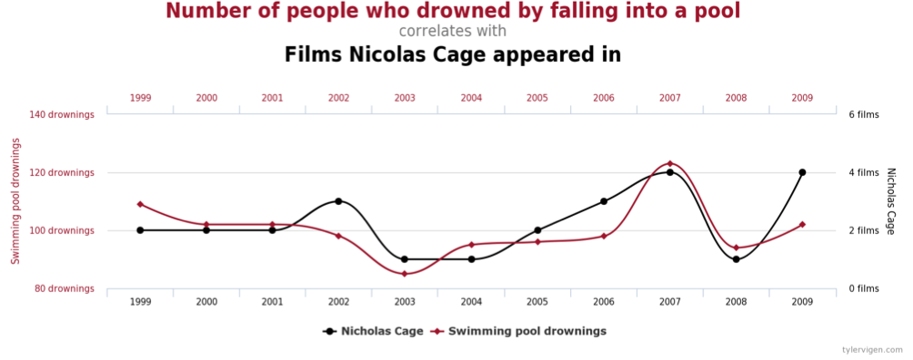
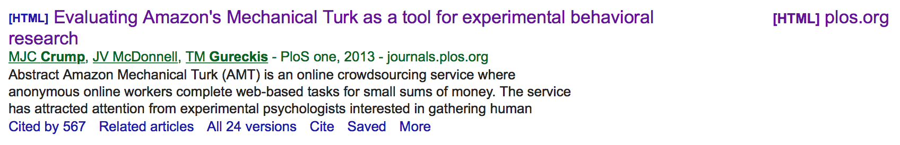

2 Getting Started With Research
So much time and so little to do. Wait a minute. Strike that. Reverse it. Thank you. —Willy Wonka
Here is the abstract of a 2014 article in the journal Psychological Science:
“Taking notes on laptops rather than in longhand is increasingly common. Many researchers have suggested that laptop note taking is less effective than longhand note taking for learning. Prior studies have primarily focused on students’ capacity for multitasking and distraction when using laptops. The present research suggests that even when laptops are used solely to take notes, they may still be impairing learning because their use results in shallower processing. In three studies, we found that students who took notes on laptops performed worse on conceptual questions than students who took notes longhand. We show that whereas taking more notes can be beneficial, laptop note takers’ tendency to transcribe lectures verbatim rather than processing information and reframing it in their own words is detrimental to learning.” [@mueller_pen_2014]
In this abstract, the researcher has identified a research question—about the effect of taking notes on a laptop on learning—and identified why it is worthy of investigation—because the practice is ubiquitous and may be harmful for learning. In terms of the general model of scientific research in psychology presented in Figure 1.1, these are activities at the “top” of the cycle. In this chapter, we focus on these activities—finding research ideas, turning them into interesting empirical research questions, and reviewing the research literature. We begin, however, with some more basic concepts that are necessary to understand how research questions in psychology are conceptualized.
Basic Concepts
Learning Objectives
Define the concept of a variable, distinguish quantitative from categorical variables, and give examples of variables that might be of interest to psychologists.
Explain the difference between a population and a sample.
Describe two basic forms of statistical relationship and give examples of each.
Interpret basic statistics and graphs used to describe statistical relationships.
Explain why correlation does not imply causation.
Before we address where research questions in psychology come from—and what makes them more or less interesting—it is important to understand the kinds of questions that researchers in psychology typically ask. This requires a quick introduction to several basic concepts, many of which we will return to in more detail later in the book.
Variables
Research questions in psychology are about variables. A variable is a quantity or quality that varies across people or situations. For example, the height of the students enrolled in a university course is a variable because it varies from student to student. The chosen major of the students is also a variable as long as not everyone in the class has declared the same major. A quantitative variable is a quantity, such as height, that is typically measured by assigning a number to each individual. Other examples of quantitative variables include people’s level of talkativeness, how depressed they are, and the number of siblings they have. A categorical variable is a quality, such as chosen major, and is typically measured by assigning a category label to each individual (e.g., Psychology, English, Nursing, etc.). Other examples include people’s nationality, their occupation, and whether they are receiving psychotherapy.
Sampling and Measurement
Researchers in psychology are usually interested in drawing conclusions about some very large group of people. This is called the population. It could be American teenagers, children with autism, professional athletes, or even just human beings—depending on the interests and goals of the researcher. But they usually study only a small subset or sample of the population. For example, a researcher might measure the talkativeness of a few hundred university students with the intention of drawing conclusions about the talkativeness of men and women in general. It is important, therefore, for researchers to use a representative sample—one that is similar to the population in important respects.
One method of obtaining a sample is simple random sampling, in which every member of the population has an equal chance of being selected for the sample. For example, a pollster could start with a list of all the registered voters in a city (the population), randomly select 100 of them from the list (the sample), and ask those 100 whom they intended to vote for. Unfortunately, random sampling is difficult or impossible in most psychological research because the populations are less clearly defined than the registered voters in a city. How could a researcher give all Canadian teenagers or all children with autism an equal chance of being selected for a sample? The most common alternative to random sampling is convenience sampling, in which the sample consists of individuals who happen to be nearby and willing to participate (such as introductory psychology students). Of course, the obvious problem with convenience sampling is that the sample might not be representative of the population.
Some research questions in psychology are about one variable. For example, how common is it for soldiers who have served in the American Military to develop post-traumatic stress disorder (PTSD) after returning from a deployment in a war zone? How talkative are American university students? How much time per week do school children spend online? Answering such questions requires operationally defining the variable, measuring it among a sample, analyzing the results, and drawing conclusions about the population. For a quantitative variable, this would typically involve computing the mean and standard deviation of the scores. For a categorical variable, it would typically involve computing the percentage of scores at each level of the variable.
Statistical Relationships Between Variables
However, research questions in psychology are more likely to be about statistical relationships between variables. There is a statistical relationship between two variables when the average score on one differs systematically across the levels of the other (e.g., if the average exam score is higher among students who took notes longhand instead of by using a laptop computer). Studying statistical relationships is important because instead of telling us about behaviors and psychological characteristics in isolation, it tells us about the potential causes, consequences, development, and organization of those behaviors and characteristics.
Differences Between Groups
One basic form of statistical relationship is a difference between the mean scores of two groups on some variable of interest. A wide variety of research questions in psychology take this form. Are women really more talkative than men? Do people talking on a cell phone have poorer driving abilities than people not talking on a cell phone? Do people receiving Psychotherapy A tend to have fewer depressive symptoms than people receiving Psychotherapy B? Later we will also see that such relationships can involve more than two groups and that the groups can consist of the very same individuals tested at different times or under different conditions. For now, however, it is easiest to think in terms of two distinct groups.
Once the sample is selected, researchers need to measure the variables they are interested in. This requires an operational definition—a definition of the variable in terms of precisely how it is to be measured. Most variables can be operationally defined in many different ways. For example, depression can be operationally defined as people’s scores on a paper-and-pencil depression scale such as the Beck Depression Inventory, the number of depressive symptoms they are experiencing, or whether they have been diagnosed with major depressive disorder. When a variable has been measured for a particular individual, the result is called a score, and a set of scores is called data. Note that data is plural—the singular datum is rarely used—so it is grammatically correct to say, “Those are interesting data” (and incorrect to say, “That is interesting data”).
There are two basic forms of statistical relationship: differences between groups and correlations between quantitative variables. Although both are consistent with the general definition of a statistical relationship—the average score on one variable differs across levels of the other—they are usually described and analyzed somewhat differently. For this reason it is important to distinguish them clearly.
Differences between groups are usually described by giving the mean score and standard deviation for each group. This information can also be presented in a bar graph like that in Figure Figure 1, where the heights of the bars represent the group means.
Correlations Between Quantitative Variables
A second basic form of statistical relationship is a correlation between two quantitative variables, where the average score on one variable differs systematically across the levels of the other. Again, a wide variety of research questions in psychology take this form. Is being a happier person associated with being more talkative? Do people who are narcissistic tend to take more selfies? Does the effectiveness of psychotherapy depend on how much the patient likes the therapist?

Correlations between quantitative variables are often presented using scatterplots. Figure Figure 2 shows some hypothetical data on the relationship between the amount of stress people are under and the number of physical symptoms they have. Each point in the scatterplot represents one person’s score on both variables. For example, the circled point in Figure Figure 2 represents a person whose stress score was 10 and who had three physical symptoms. Taking all the points into account, one can see that people under more stress tend to have more physical symptoms. This is a good example of a positive relationship, in which higher scores on one variable tend to be associated with higher scores on the other. A negative relationship is one in which higher scores on one variable tend to be associated with lower scores on the other. There is a negative relationship between stress and immune system functioning, for example, because higher stress is associated with lower immune system functioning.

The strength of a correlation between quantitative variables is typically measured using a statistic called Pearson’s r. As Figure Figure 3 shows, Pearson’s r ranges from −1.00 (the strongest possible negative relationship) to +1.00 (the strongest possible positive relationship). A value of 0 means there is no relationship between the two variables. When Pearson’s r is 0, the points on a scatterplot form a shapeless “cloud.” As its value moves toward −1.00 or +1.00, the points come closer and closer to falling on a single straight line. The website http://rpsychologist.com/d3/correlation/, created by Kristoffer Magnusson, provides an excellent interactive visualization of correlations that permits you to adjust the strength and direction of a correlation while witnessing the corresponding changes to the scatterplot.
Pearson’s r is a good measure only for linear relationships, in which the points are best approximated by a straight line. It is not a good measure for nonlinear relationships, in which the points are better approximated by a curved line.

Figure Figure 4, for example, shows a hypothetical relationship between the amount of sleep people get per night and their level of depression. In this example, the line that best approximates the points is a curve—a kind of upside- down “U”—because people who get about eight hours of sleep tend to be the least depressed. Those who get too little sleep and those who get too much sleep tend to be more depressed. Nonlinear relationships are fairly common in psychology, but measuring their strength is beyond the scope of this book.
Correlation Does Not Imply Causation
Researchers are often interested in a statistical relationship between two variables because they think that one of the variables causes the other. That is, the statistical relationship reflects a causal relationship. In these situations, the variable that is thought to be the cause is called the independent variable (often referred to as X for short), and the variable that is thought to be the effect is called the dependent variable (often referred to as Y). For example, the statistical relationship between whether or not a depressed person receives psychotherapy and the number of depressive symptoms he or she has reflects the fact that the psychotherapy (the independent variable) causes the reduction in symptoms (the dependent variable). Understanding causal relationships is important in part because it allows us to change people’s behavior in predictable ways. If we know that psychotherapy causes a reduction in depressive symptoms—and we want people to have fewer depressive symptoms—then we can use psychotherapy to achieve this goal.
But not all statistical relationships reflect causal relationships. This is what psychologists mean when they say, “Correlation does not imply causation.” An amusing example of this comes from a 2012 study that showed a positive correlation (Pearson’s r = 0.79) between the per capita chocolate consumption of a nation and the number of Nobel prizes awarded to citizens of that nation [@messerli_chocolate_2012]. It seems clear, however, that this does not mean that eating chocolate causes people to win Nobel prizes, and it would not make sense to try to increase the number of Nobel prizes won by recommending that parents feed their children more chocolate.
There are two reasons that correlation does not imply causation. The first is called the directionality problem. Two variables, X and Y, can be statistically related because X causes Y or because Y causes X. Consider, for example, a study showing that whether or not people exercise is statistically related to how happy they are—such that people who exercise are happier on average than people who do not. This statistical relationship is consistent with the idea that exercising causes happiness, but it is also consistent with the idea that happiness causes exercise. Perhaps being happy gives people more energy or leads them to seek opportunities to socialize with others by going to the gym. The second reason that correlation does not imply causation is called the third-variable problem. Two variables, X and Y, can be statistically related not because X causes Y, or because Y causes X, but because some third variable, Z, causes both X and Y. For example, the fact that nations that have won more Nobel prizes tend to have higher chocolate consumption probably reflects geography in that European countries tend to have higher rates of per capita chocolate consumption and invest more in education and technology (once again, per capita) than many other countries in the world. Similarly, the statistical relationship between exercise and happiness could mean that some third variable, such as physical health, causes both of the others. Being physically healthy could cause people to exercise and cause them to be happier.

“Lots of Candy Could Lead to Violence”
Although researchers in psychology know that correlation does not imply causation, many journalists do not. One website about correlation and causation, http://jonathan.mueller.faculty.noctrl.edu/100/ correlation_or_causation.htm, links to dozens of media reports about real biomedical and psychological research. Many of the headlines suggest that a causal relationship has been demonstrated, when a careful reading of the articles shows that it has not because of the directionality and third-variable problems.
One such article is about a study showing that children who ate candy every day were more likely than other children to be arrested for a violent offense later in life. But could candy really “lead to” violence, as the headline suggests? What alternative explanations can you think of for this statistical relationship? How could the headline be rewritten so that it is not misleading?
As we will see later in the book, there are various ways that researchers address the directionality and third-variable problems. The most effective, however, is to conduct an experiment. An experiment is a study in which the researcher manipulates the independent variable. For example, instead of simply measuring how much people exercise, a researcher could bring people into a laboratory and randomly assign half of them to run on a treadmill for 15 minutes and the rest to sit on a couch for 15 minutes. Although this seems like a minor change to the research design, it is extremely important. Now if the exercisers end up in more positive moods than those who did not exercise, it cannot be because their moods affected how much they exercised (because it was the researcher who determined how much they exercised). Likewise, it cannot be because some third variable (e.g., physical health) affected both how much they exercised and what mood they were in (because, again, it was the researcher who determined how much they exercised). Thus experiments eliminate the directionality and third-variable problems and allow researchers to draw firm conclusions about causal relationships. We will have much more to say about experimental and nonexperimental research later in the book.
Key Takeaways
Research questions in psychology are about variables and relationships between variables.
Two basic forms of statistical relationship are differences between group means and correlations between quantitative variables, each of which can be described using a few simple statistical techniques.
Correlation does not imply causation. A statistical relationship between two variables, X and Y, does not necessarily mean that X causes Y. It is also possible that Y causes X, or that a third variable, Z, causes both X and Y.
Exercises
Practice: List 10 variables that might be of interest to a researcher in psychology. For each, specify whether it is quantitative or categorical.
Practice: Imagine that you categorize people as either introverts (quieter, shyer, more inward looking) or extraverts (louder, more outgoing, more outward looking). Sketch a bar graph showing a hypothetical statistical relationship between this variable and the number of words people speak per day.
Practice: Now imagine that you measure people’s levels of extraversion as a quantitative variable, with values ranging from 0 (extreme introversion) to 30 (extreme extraversion). Sketch a scatterplot showing a hypothetical statistical relationship between this variable and the number of words people speak per day.
Practice: For each of the following statistical relationships, decide whether the directionality problem is present and think of at least one plausible third variable:
- People who eat more lobster tend to live longer.
- People who exercise more tend to weigh less.
- College students who drink more alcohol tend to have poorer grades.
Generating Good Research Questions
Learning Objectives
Describe some common sources of research ideas and generate research ideas using those sources.
Describe some techniques for turning research ideas into empirical research questions and use those techniques to generate questions.
Explain what makes a research question interesting and evaluate research questions in terms of their interestingness.
Good research must begin with a good research question. Yet coming up with good research questions is something that novice researchers often find difficult and stressful. One reason is that this is a creative process that can appear mysterious—even magical—with experienced researchers seeming to pull interesting research questions out of thin air. However, psychological research on creativity has shown that it is neither as mysterious nor as magical as it appears. It is largely the product of ordinary thinking strategies and persistence [@weisberg_creativity:_1993]. This section covers some fairly simple strategies for finding general research ideas, turning those ideas into empirically testable research questions, and finally evaluating those questions in terms of how interesting they are and how feasible they would be to answer.
Finding Inspiration
Research questions often begin as more general research ideas—usually focusing on some behavior or psychological characteristic: talkativeness, learning, depression, bungee jumping, and so on. Before looking at how to turn such ideas into empirically testable research questions, it is worth looking at where such ideas come from in the first place. Three of the most common sources of inspiration are informal observations, practical problems, and previous research.
Informal observations include direct observations of our own and others’ behavior as well as secondhand observations from nonscientific sources such as newspapers, books, blogs, and so on. For example, you might notice that you always seem to be in the slowest moving line at the grocery store. Could it be that most people think the same thing? Or you might read in a local newspaper about people donating money and food to a local family whose house has burned down and begin to wonder about who makes such donations and why. Some of the most famous research in psychology has been inspired by informal observations. Stanley Milgram’s famous research on obedience to authority, for example, was inspired in part by journalistic reports of the trials of accused Nazi war criminals—many of whom claimed that they were only obeying orders. This led him to wonder about the extent to which ordinary people will commit immoral acts simply because they are ordered to do so by an authority figure [@milgram_behavioral_1963].
Practical problems can also inspire research ideas, leading directly to applied research in such domains as law, health, education, and sports. Does taking lecture notes by hand improve students’ exam performance? How effective is psychotherapy for depression compared to drug therapy? To what extent do cell phones impair people’s driving ability? How can we teach children to read more efficiently? What is the best mental preparation for running a marathon?
Probably the most common inspiration for new research ideas, however, is previous research. Recall that science is a kind of large-scale collaboration in which many different researchers read and evaluate each other’s work and conduct new studies to build on it. Of course, experienced researchers are familiar with previous research in their area of expertise and probably have a long list of ideas. This suggests that novice researchers can find inspiration by consulting with a more experienced researcher (e.g., students can consult a faculty member). But they can also find inspiration by picking up a copy of almost any professional journal and reading the titles and abstracts. In one typical issue of Psychological Science, for example, you can find articles on the perception of shapes, anti-Semitism, police lineups, the meaning of death, second-language learning, people who seek negative emotional experiences, and many other topics. If you can narrow your interests down to a particular topic (e.g., memory) or domain (e.g., health care), you can also look through more specific journals, such as Memory & Cognition or Health Psychology.
Generating Empirically Testable Research Questions
Once you have a research idea, you need to use it to generate one or more empirically testable research questions, that is, questions expressed in terms of a single variable or relationship between variables. One way to do this is to look closely at the discussion section in a recent research article on the topic. This is the last major section of the article, in which the researchers summarize their results, interpret them in the context of past research, and suggest directions for future research. These suggestions often take the form of specific research questions, which you can then try to answer with additional research. This can be a good strategy because it is likely that the suggested questions have already been identified as interesting and important by experienced researchers.
But you may also want to generate your own research questions. How can you do this? First, if you have a particular behavior or psychological characteristic in mind, you can simply conceptualize it as a variable and ask how frequent or intense it is. How many words on average do people speak per day? How accurate are our memories of traumatic events? What percentage of people have sought professional help for depression? If the question has never been studied scientifically—which is something that you will learn in your literature review—then it might be interesting and worth pursuing.
If scientific research has already answered the question of how frequent or intense the behavior or characteristic is, then you should consider turning it into a question about a statistical relationship between that behavior or characteristic and some other variable. One way to do this is to ask yourself the following series of more general questions and write down all the answers you can think of.
- What are some possible causes of the behavior or characteristic?
- What are some possible effects of the behavior or characteristic?
- What types of people might exhibit more or less of the behavior or characteristic?
- What types of situations might elicit more or less of the behavior or characteristic?
In general, each answer you write down can be conceptualized as a second variable, suggesting a question about a statistical relationship. If you were interested in talkativeness, for example, it might occur to you that a possible cause of this psychological characteristic is family size. Is there a statistical relationship between family size and talkativeness? Or it might occur to you that people seem to be more talkative in same-sex groups than mixed-sex groups. Is there a difference in the average level of talkativeness of people in same-sex groups and people in mixed- sex groups? This approach should allow you to generate many different empirically testable questions about almost any behavior or psychological characteristic.
If through this process you generate a question that has never been studied scientifically—which again is something that you will learn in your literature review—then it might be interesting and worth pursuing. But what if you find that it has been studied scientifically? Although novice researchers often want to give up and move on to a new question at this point, this is not necessarily a good strategy. For one thing, the fact that the question has been studied scientifically and the research published suggests that it is of interest to the scientific community. For another, the question can almost certainly be refined so that its answer will still contribute something new to the research literature. Again, asking yourself a series of more general questions about the statistical relationship is a good strategy.
- Are there other ways to operationally define the variables?
- Are there types of people for whom the statistical relationship might be stronger or weaker?
- Are there situations in which the statistical relationship might be stronger or weaker—including situations with practical importance?
For example, research has shown that women and men speak about the same number of words per day—but this was when talkativeness was measured in terms of the number of words spoken per day among university students in the United States and Mexico. We can still ask whether other ways of measuring talkativeness—perhaps the number of different people spoken to each day—produce the same result. Or we can ask whether studying elderly people or people from other cultures produces the same result. Again, this approach should help you generate many different research questions about almost any statistical relationship.
Evaluating Research Questions
Researchers usually generate many more research questions than they ever attempt to answer. This means they must have some way of evaluating the research questions they generate so that they can choose which ones to pursue. In this section, we consider two criteria for evaluating research questions: the interestingness of the question and the feasibility of answering it.
Interestingness
How often do people tie their shoes? Do people feel pain when you punch them in the jaw? Are women more likely to wear makeup than men? Do people prefer vanilla or chocolate ice cream? Although it would be a fairly simple matter to design a study and collect data to answer these questions, you probably would not want to because they are not interesting. We are not talking here about whether a research question is interesting to us personally but whether it is interesting to people more generally and, especially, to the scientific community. But what makes a research question interesting in this sense? Here we look at three factors that affect the interestingness of a research question:
- the answer is in doubt
- the answer fills a gap in the research literature
- the answer has important practical implications.
First, a research question is interesting to the extent that its answer is in doubt. Obviously, questions that have been answered by scientific research are no longer interesting as the subject of new empirical research. But the fact that a question has not been answered by scientific research does not necessarily make it interesting. There has to be some reasonable chance that the answer to the question will be something that we did not already know. But how can you assess this before actually collecting data? One approach is to try to think of reasons to expect different answers to the question—especially ones that seem to conflict with common sense. If you can think of reasons to expect at least two different answers, then the question might be interesting. If you can think of reasons to expect only one answer, then it probably is not. The question of whether women are more talkative than men is interesting because there are reasons to expect both answers. The existence of the stereotype itself suggests the answer could be yes, but the fact that women’s and men’s verbal abilities are fairly similar suggests the answer could be no. The question of whether people feel pain when you punch them in the jaw is not interesting because there is absolutely no reason to think that the answer could be anything other than a resounding yes.
A second important factor to consider when deciding if a research question is interesting is whether answering it will fill a gap in the research literature. Again, this means in part that the question has not already been answered by scientific research. But it also means that the question is in some sense a natural one for people who are familiar with the research literature. For example, the question of whether taking lecture notes by hand can help improve students’ exam performance would be likely to occur to anyone who was familiar with research on note taking and the ineffectiveness of shallow processing on learning.
A final factor to consider when deciding whether a research question is interesting is whether its answer has important practical implications. Again, the question of whether taking notes by hand improves learning has important implications for education, including classroom policies concerning technology use. The question of whether cell phone use impairs driving is interesting because it is relevant to the personal safety of everyone who travels by car and to the debate over whether cell phone use should be restricted by law.
Feasibility
A second important criterion for evaluating research questions is the feasibility of successfully answering them. There are many factors that affect feasibility, including time, money, equipment and materials, technical knowledge and skill, and access to research participants. Clearly, researchers need to take these factors into account so that they do not waste time and effort pursuing research that they cannot complete successfully.
Looking through a sample of professional journals in psychology will reveal many studies that are complicated and difficult to carry out. These include longitudinal designs in which participants are tracked over many years, neuroimaging studies in which participants’ brain activity is measured while they carry out various mental tasks, and complex non-experimental studies involving several variables and complicated statistical analyses. Keep in mind, though, that such research tends to be carried out by teams of highly trained researchers whose work is often supported in part by government and private grants. Keep in mind also that research does not have to be complicated or difficult to produce interesting and important results. Looking through a sample of professional journals will also reveal studies that are relatively simple and easy to carry out—perhaps involving a convenience sample of university students and a paper-and-pencil task.
A final point here is that it is generally good practice to use methods that have already been used successfully by other researchers. For example, if you want to manipulate people’s moods to make some of them happy, it would be a good idea to use one of the many approaches that have been used successfully by other researchers (e.g., paying them a compliment). This is good not only for the sake of feasibility—the approach is “tried and true”—but also because it provides greater continuity with previous research. This makes it easier to compare your results with those of other researchers and to understand the implications of their research for yours, and vice versa.
Key Takeaways
Research ideas can come from a variety of sources, including informal observations, practical problems, and previous research.
Research questions expressed in terms of variables and relationships between variables can be suggested by other researchers or generated by asking a series of more general questions about the behavior or psychological characteristic of interest.
It is important to evaluate how interesting a research question is before designing a study and collecting data to answer it. Factors that affect interestingness are the extent to which the answer is in doubt, whether it fills a gap in the research literature, and whether it has important practical implications.
It is also important to evaluate how feasible a research question will be to answer. Factors that affect feasibility include time, money, technical knowledge and skill, and access to special equipment and research participants.
Exercises
Practice: Generate five research ideas based on each of the following: informal observations, practical problems, and topics discussed in recent issues of professional journals.
Practice: Generate five empirical research questions about each of the following behaviors or psychological characteristics: long-distance running, getting tattooed, social anxiety, bullying, and memory for early childhood events.
Practice: Evaluate each of the research questions you generated in Exercise 2 in terms of its interestingness based on the criteria discussed in this section.
Practice: Find an issue of a journal that publishes short empirical research reports (e.g., Psychological Science, Psychonomic Bulletin and Review, Personality and Social Psychology Bulletin). Pick three studies, and rate each one in terms of how feasible it would be for you to replicate it with the resources available to you right now. Use the following rating scale: (1) You could replicate it essentially as reported. (2) You could replicate it with some simplifications. (3) You could not replicate it. Explain each rating.
Reviewing the Research Literature
Learning Objectives
Define the research literature in psychology and give examples of sources that are part of the research literature and sources that are not.
Describe and use several methods for finding previous research on a particular research idea or question.
Reviewing the research literature means finding, reading, and summarizing the published research relevant to your question. An empirical research report written in American Psychological Association (APA) style always includes a written literature review, but it is important to review the literature early in the research process for several reasons.
- It can help you turn a research idea into an interesting research question.
- It can tell you if a research question has already been answered.
- It can help you evaluate the interestingness of a research question.
- It can give you ideas for how to conduct your own study.
- It can tell you how your study fits into the research literature.
What Is the Research Literature?
The research literature in any field is all the published research in that field. The research literature in psychology is enormous—including millions of scholarly articles and books dating to the beginning of the field—and it continues to grow. Although its boundaries are somewhat fuzzy, the research literature definitely does not include self-help and other pop psychology books, dictionary and encyclopedia entries, websites, and similar sources that are intended mainly for the general public. These are considered unreliable because they are not reviewed by other researchers and are often based on little more than common sense or personal experience. Wikipedia contains much valuable information, but the fact that its authors are anonymous and may not have any formal training or expertise in that subject area, and its content continually changes makes it unsuitable as a basis of sound scientific research. For our purposes, it helps to define the research literature as consisting almost entirely of two types of sources: articles in professional journals, and scholarly books in psychology and related fields.
Professional Journals
Professional journals are periodicals that publish original research articles. There are thousands of professional journals that publish research in psychology and related fields. They are usually published monthly or quarterly in individual issues, each of which contains several articles. The issues are organized into volumes, which usually consist of all the issues for a calendar year. Some journals are published in hard copy only, others in both hard copy and electronic form, and still others in electronic form only.
Most articles in professional journals are one of two basic types: empirical research reports and review articles. Empirical research reports describe one or more new empirical studies conducted by the authors. They introduce a research question, explain why it is interesting, review previous research, describe their method and results, and draw their conclusions. Review articles summarize previously published research on a topic and usually present new ways to organize or explain the results. When a review article is devoted primarily to presenting a new theory, it is often referred to as a theoretical article.
Most professional journals in psychology undergo a process of double-blind peer review. Researchers who want to publish their work in the journal submit a manuscript to the editor—who is generally an established researcher too—who in turn sends it to two or three experts on the topic. Each reviewer reads the manuscript, writes a critical but constructive review, and sends the review back to the editor along with his or her recommendations. The editor then decides whether to accept the article for publication, ask the authors to make changes and resubmit it for further consideration, or reject it outright. In any case, the editor forwards the reviewers’ written comments to the researchers so that they can revise their manuscript accordingly. This entire process is double-blind, as the reviewers do not know the identity of the researcher(s), and vice versa. Double-blind peer review is helpful because it ensures that the work meets basic standards of the field before it can enter the research literature. However, in order to increase transparency and accountability some newer open access journals (e.g., Frontiers in Psychology) utilize an open peer review process wherein the identities of the reviewers (which remain concealed during the peer review process) are published alongside the journal article.
Scholarly Books
Scholarly books are books written by researchers and practitioners mainly for use by other researchers and practitioners. A monograph is written by a single author or a small group of authors and usually gives a coherent presentation of a topic much like an extended review article. Edited volumes have an editor or a small group of editors who recruit many authors to write separate chapters on different aspects of the same topic. Although edited volumes can also give a coherent presentation of the topic, it is not unusual for each chapter to take a different perspective or even for the authors of different chapters to openly disagree with each other. In general, scholarly books undergo a peer review process similar to that used by professional journals.
Literature Search Strategies
Using PsycINFO and Other Databases
The primary method used to search the research literature involves using one or more electronic databases. These include Academic Search Premier, JSTOR, and ProQuest for all academic disciplines, ERIC for education, and PubMed for medicine and related fields. The most important for our purposes, however, is PsycINFO, which is produced by the APA. PsycINFO is so comprehensive—covering thousands of professional journals and scholarly books going back more than 100 years—that for most purposes its content is synonymous with the research literature in psychology. Like most such databases, PsycINFO is usually available through your university library.
You can get access to PsycInfo through the Brooklyn College library, it is listed here in the ’p’ section. http://libguides.brooklyn.cuny.edu/az.php?a=p
PsycINFO consists of individual records for each article, book chapter, or book in the database. Each record includes basic publication information, an abstract or summary of the work (like the one presented at the start of this chapter), and a list of other works cited by that work. A computer interface allows entering one or more search terms and returns any records that contain those search terms. (These interfaces are provided by different vendors and therefore can look somewhat different depending on the library you use.) Each record also contains lists of keywords that describe the content of the work and also a list of index terms. The index terms are especially helpful because they are standardized. Research on differences between women and men, for example, is always indexed under “Human Sex Differences.” Research on notetaking is always indexed under the term “Learning Strategies.” If you do not know the appropriate index terms, PsycINFO includes a thesaurus that can help you find them.
Given that there are nearly four million records in PsycINFO, you may have to try a variety of search terms in different combinations and at different levels of specificity before you find what you are looking for. Imagine, for example, that you are interested in the question of whether women and men differ in terms of their ability to recall experiences from when they were very young. If you were to enter “memory for early experiences” as your search term, PsycINFO would return only six records, most of which are not particularly relevant to your question. However, if you were to enter the search term “memory,” it would return 149,777 records—far too many to look through individually. This is where the thesaurus helps. Entering “memory” into the thesaurus provides several more specific index terms—one of which is “early memories.” While searching for “early memories” among the index terms returns 1,446 records—still too many too look through individually—combining it with “human sex differences” as a second search term returns 37 articles, many of which are highly relevant to the topic.
Depending on the vendor that provides the interface to PsycINFO, you may be able to save, print, or e-mail the relevant PsycINFO records. The records might even contain links to full-text copies of the works themselves.
Using Other Search Techniques
In addition to entering search terms into PsycINFO and other databases, there are several other techniques you can use to search the research literature. First, if you have one good article or book chapter on your topic—a recent review article is best—you can look through the reference list of that article for other relevant articles, books, and book chapters. In fact, you should do this with any relevant article or book chapter you find. You can also start with a classic article or book chapter on your topic, find its record in PsycINFO (by entering the author’s name or article’s title as a search term), and link from there to a list of other works in PsycINFO that cite that classic article. This works because other researchers working on your topic are likely to be aware of the classic article and cite it in their own work. You can also do a general Internet search using search terms related to your topic or the name of a researcher who conducts research on your topic. This might lead you directly to works that are part of the research literature (e.g., articles in open-access journals or posted on researchers’ own websites).
Google Scholar
The search engine Google Scholar https://scholar.google.com is especially useful alternative to PsycInfo and other databases. Many researchers rely almost exclusively on Google Scholar because you it maintains a comprehensive list of nearly all published work in all fields, including Psychology. It’s also easier to search and navigate that many other databases.
Google scholar has lots of useful features for finding articles that can be relevant to you. You can enter any search term in, and Google Scholar will find things related to your keywords. It’s good to start with your research topic, but if you are looking for a specific paper then you can enter the title (or part of the title), or the authors and the year. Try it out.

Figure Figure 6 shows an example of paper listed in Google Scholar. Once you find an article, you may be able to download a copy of it as many electronic copies are listed on the right side of each paper in Google Scholar. When you click on the title, you will usually be taken to a webpage from the journal that published the article. If you are at home, the paper will often be behind a paywall. Your university might have a subscription to this journal, so you can usually get articles for free by accessing them through the library. Many times the author of the paper will have copies of their papers for free on their websites.
If you are searching for papers on Google Scholar on the Brooklyn College campus, then you can usually get the articles straight away because you are on the network. You can also log-in to the Brooklyn College library from home, and get access remotely.
Notice, that Google tells you how many times the paper has been cited, this can give you a clue about whether the paper has been influential in the literature. More important, you can click the “cited by” link to look at all the new articles that cited the work since it was published. This is a good way to find more recent research relevant to your question. There is also a helpful “related articles” link, which shows you a list of articles that Google thinks are related to the main article.
Finally, the “Cite” link will open a window with a citation to the paper, so Google can help you write your references sections. But, be careful here, sometimes the citation information is incorrect, so make sure to double-check (for some reason the page ranges are often incorrect or missing).
A general Internet search might also lead you to websites that are not part of the research literature but might provide references to works that are. Finally, you can talk to people (e.g., your instructor or other faculty members in psychology) who know something about your topic and can suggest relevant articles and book chapters.
What to Search For
When you do a literature review, you need to be selective. Not every article, book chapter, and book that relates to your research idea or question will be worth obtaining, reading, and integrating into your review. Instead, you want to focus on sources that help you do four basic things: (a) refine your research question, (b) identify appropriate research methods, (c) place your research in the context of previous research, and (d) write an effective research report. Several basic principles can help you find the most useful sources.
First, it is best to focus on recent research, keeping in mind that what counts as recent depends on the topic. For newer topics that are actively being studied, “recent” might mean published in the past year or two. For older topics that are receiving less attention right now, “recent” might mean within the past 10 years. You will get a feel for what counts as recent for your topic when you start your literature search. A good general rule, however, is to start with sources published in the past five years. The main exception to this rule would be classic articles that turn up in the reference list of nearly every other source. If other researchers think that this work is important, even though it is old, then by all means you should include it in your review.
Second, you should look for review articles on your topic because they will provide a useful overview of it—often discussing important definitions, results, theories, trends, and controversies—giving you a good sense of where your own research fits into the literature. You should also look for empirical research reports addressing your question or similar questions, which can give you ideas about how to operationally define your variables and collect your data. As a general rule, it is good to use methods that others have already used successfully unless you have good reasons not to. Finally, you should look for sources that provide information that can help you argue for the interestingness of your research question. For a study on the effects of cell phone use on driving ability, for example, you might look for information about how widespread cell phone use is, how frequent and costly motor vehicle crashes are, and so on.
How many sources are enough for your literature review? This is a difficult question because it depends on how extensively your topic has been studied and also on your own goals. One study found that across a variety of professional journals in psychology, the average number of sources cited per article was about 50 [@adair_explosion_2003]. This gives a rough idea of what professional researchers consider to be adequate. As a student, you might be assigned a much lower minimum number of references to use, but the principles for selecting the most useful ones remain the same.
Zotero and Organizing the papers you find
When you really start digging into the literature you will find out that it is often huge. This is exciting because there are actually answers to many of the questions you might have in the literature. So, you get the benefit of reading those answers, which takes much less time than conducting the research yourself.
However, you will also find many irrelevant papers, and ultimately many relevant papers. So many papers will create an organization problem. If you do not organize your literature review, then you will not be able to easily go back and find all of the relevant papers from your earlier efforts. Without good organization, you will probably end up with electronic copies of papers in different folders on your computer, and you may end up losing important ones in that clutter.
Luckily, there are many reference manager tools out there to help you with organization. A really great one is Zotero, which is free, and runs on most computers and on the web. You can download a standalone version of Zotero to run as an application on your computer, or sign up for a free web-account. The website for Zotero is https://www.zotero.org.
Zotero has a few really useful features that you can use in this class to help you with your literature reviews, and to help you cite papers while you write, and write your reference sections.
For example, you can download a plug-in for your web-browser that let’s your seamlessly move content that you find on the web into Zotero. For example, when you are searching in Google Scholar or Psyc Info, there will be a new button in your web-browser that let’s you automatically select papers that are listed in the database and import them into Zotero. Zotero will import the citation information, and if an electronic copy of the paper is available, it will automatically download the paper for you and keep it in your Zotero database. This makes it is easy to find all of our papers, because they are all in Zotero.
You can download plugins that work in your word processing apps such as Microsoft Office, or Open office. What’s neat about this, is that while you are writing your paper, you can use hotkeys to automatically cite papers that are in your Zotero library. You can even set this function to use APA style.
Finally, you can select any number of references in Zotero and then export a bibliography, written in APA style (or another style of your choice). So, Zotero can write your reference section for you! Again, be careful to check for mistakes.
Key Takeaways
The research literature in psychology is all the published research in psychology, consisting primarily of articles in professional journals and scholarly books.
Early in the research process, it is important to conduct a review of the research literature on your topic to refine your research question, identify appropriate research methods, place your question in the context of other research, and prepare to write an effective research report.
There are several strategies for finding previous research on your topic. Among the best is using PsycINFO, a computer database that catalogs millions of articles, books, and book chapters in psychology and related fields.
Exercises
Practice: Use the techniques discussed in this section to find 10 journal articles and book chapters on one of the following research ideas: memory for smells, aggressive driving, the causes of narcissistic personality disorder, the functions of the intraparietal sulcus, or prejudice against the physically handicapped.
Watch the following video clip produced by UBCiSchool about how to read an academic paper (without losing your mind) https://www.youtube.com/watch?v=SKxm2HF_-k0